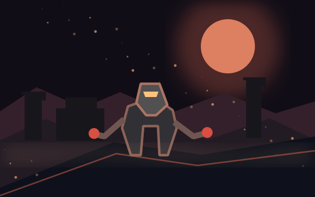
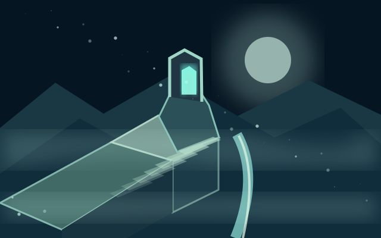
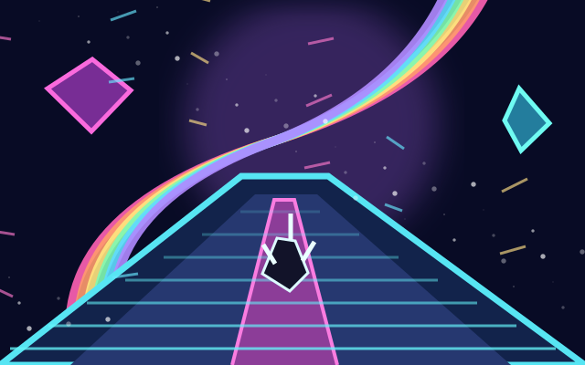

01
01
Realm 01 · Story / Survival
Twilight and Ash II
Save the magic tree on a lifeless island: find the seed, water it, defend it until it turns the world over.
СОБСТВЕННЫЕ ИГРЫ · БЕЗ РЕКЛАМНЫХ ПАУЗ
Наши миры, созданные с Claude. Мистика, древние острова, туман, свет и приключения. Запускай игру прямо на META GAMES — без переходов на Playgama.
Все игровые ссылки ведут только на собственные версии в META GAMES Lab.
01
Realm 01 · Story / Survival
Save the magic tree on a lifeless island: find the seed, water it, defend it until it turns the world over.
 02
02
Realm 02 · Fantasy / Creation
A living island of construction, discovery and mysterious inhabitants.

03Realm 03 · Action / Survival
Walk a broken world where danger waits beyond the glow.
 04
04
Realm 04 · Underwater / Mystery
Descend past the light into a strange and restless deep.
 05
05
Realm 05 · Connected / Adventure
Cross the boundaries between different lives and landscapes.

06Realm 06 · Exploration / Mystery
Explore endless mist-veiled terraces, cross ancient ruins and reclaim six lost memories.
 07
07
Realm 07 · Action / Reference
The original voxel island at dusk: collect the coins, arm yourself and light the lighthouse before night wins.
 08
08
Realm 08 · Adventure / Reference
Swim an endless archipelago, dodge the breaching whale and light every lighthouse on its own terms.
 09
09
Realm 09 · Archery / Reference
Hold a ruined tower above the clouds against a dragon that plunges and ambushes out of the blue fog.
 10
10
Realm 10 · Platformer / Reference
A folded comic-noir city hangs overhead: climb falling houses, stomp creepy toys and find out whose night this is.
 11
11
Приключение · Пиксельный мир
Путешествие через сумеречные острова и зыбкий свет.
 12
12

13 14
14
 15
15
3D · Исследование
Другая версия города с отдельной сценой и галереей.
 16
16
 17
17
Игры по этому запросу не найдены.